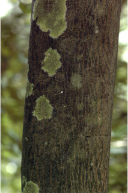

Images :



| Habit : | Small trees , ca.12 m tall. |
| Leaves : | Leaves simple , alternate , distichous ; petiole 0.4-0.6 cm long, canaliculate , glabrous ; lamina 4-10 x 2-3.8 cm, narrow ovate to elliptic-ovate , apex obtusely acute or narrowly acuminate with blunt tip, base acute to cuneate , sometimes rounded , subcoriaceous , glabrous , shining, midrib flat above; secondary_nerves 6-8 pairs, slender, moderately ascending; tertiary and higher order nerves finely reticulate . |
| Inflorescence / Flower : | Flowers solitary or 2-3 in leaf opposed cymes , yellowish with pink tinge; pedicels 0.3-0.5 cm. |
| Fruit and Seed : | Clustered 1-3 seeded berries , subsessile , globose or cylindric with constriction between seeds , yellow tomentose . |